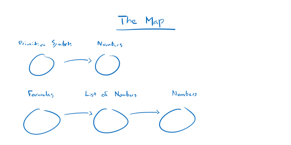
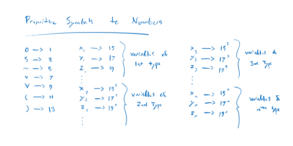

The Encoding
Notes on Godel's Incompleteness Theorem
An important part of Godel's Incompleteness Theorem is a mapping from the set of formulas in the system P to the set of numbers so that every formula is uniquely encoded as a number. For example, the formula SS0 is mapped to 331.
In general, the mapping looks like this:
Here's a specific outline of the steps.
First, primitive symbols are mapped to numbers.
I'm going to call this symbolNumber so that, for example, symbolNumber(v) = 7 and symbolNumber(S) = 3.
Second, the formulas of P, like SS0, are mapped to sequences of numbers using symbolNumber. A formula is a sequence of primitive symbols so we just replace each primitive symbol with the number it is mapped to and we automatically end up with a sequence of numbers. I'll call this mapping formulaNumber. For example,
formulaNumber(SS0)
= symbolNumber(S)symbolNumber(S)symbolNumber(0)
= symbolNumber(S)symbolNumber(S)1
= symbolNumber(S)31
= 331
Finally, sequences of numbers are mapped to numbers. I'll call this mapping numberSequenceNumber. It is defined like this:
numberSequenceNumber(ab...c) = 2^a * 3^b * .... * p^c
For example,
numberListToNumber(331)
= 2^3 * 3^3 * 5^1
= 2^3 * 27 * 5
= 2^3 * 27 * 5
= 8 * 27 * 5
= 1080
When you combine all the mappings together, you get a mapping from the formulas to the numbers.